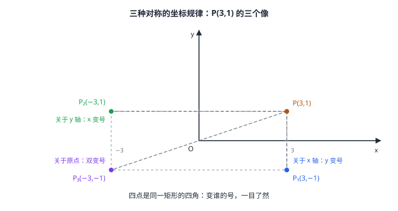

变换与坐标（含折叠问题）
把平移与对称搬进平面直角坐标系，几何动作立刻翻译成坐标算术：平移是「加」——(x,y)\to(x+a,\ y+b)；关于 x 轴对称是纵坐标变号 (x,\ -y)，关于 y 轴是横坐标变号 (-x,\ y)，关于原点是「双变号」(-x,\ -y)；对称轴平移到 x=m、y=n 时规律升级为 2m-x、2n-y。折叠问题的本质是轴对称：折痕即对称轴，对应边角全等——用「不变量 + 勾股」就能把折叠后的新图形算清楚。
| 所属主题 | 图形与变换 |
|---|---|
| 所属模块 | 几何 |
| 课标学段 | 第四学段（7~9 年级） |
| 前置知识 | 平面直角坐标系与函数、直角三角形与勾股定理、平移与旋转、相交线与平行线 |
| 核心素养 | 运算能力几何直观推理能力 |
教材定位
人民教育出版社《人教版（2024版）义务教育教科书·数学》
七年级下册第9章 平面直角坐标系9.2 坐标方法的简单应用
对应七下 9.2 之下的 9.2.2 用坐标表示平移；本篇把平移、轴对称、中心对称统一写成坐标规律，并补上折叠问题（教材未单列，属综合应用）。
说明
平移的坐标规律：图形上每点 (x,y) 向右平移 a、向上平移 b 个单位，得 (x+a,\ y+b)（向左、向下则减）。「加」对应平移：方向定加减、距离定数值——横坐标管左右、纵坐标管上下，一条规律覆盖所有点。
关于坐标轴与原点的对称（图 1）：点 (x,y) 关于 x 轴对称得 (x,\ -y)（对称点连线垂直 x 轴且被它平分：横坐标不动、纵坐标互为相反数）；关于 y 轴对称得 (-x,\ y)；关于原点对称得 (-x,\ -y)（旋转 180^\circ，横纵双变号）。口诀「关于谁、谁不变」：关于 x 轴 x 不变，关于 y 轴 y 不变，关于原点全都变。
对称轴平移后的规律：关于竖直直线 x=m 对称得 (2m-x,\ y)——横坐标到 m 的距离翻到另一侧；关于水平直线 y=n 对称得 (x,\ 2n-y)。把它想成「先把 x=m 平移到 y 轴、对称、再平移回去」，公式不必死记。
折叠问题的坐标与几何语言：折叠就是轴对称——折痕是对称轴，折过去部分与折回来部分全等：对应边相等、对应角相等；对应点连线被折痕垂直平分。折叠矩形、三角形纸片后出现的新线段（落点位置、重叠区域的边），靠「设未知数 + 勾股定理」列方程求解（例 2）。
使用场景
程序绘图与游戏关卡：角色精灵的镜像翻转、贴图平移，底层就是对顶点坐标执行 (x,-y) 或 (x+a, y+b)——设计师在坐标层面直接「写」出对称与平移。
折纸手工与包装设计：沿折痕翻折纸片，落点、重叠区的形状由轴对称性质决定——包装盒展开图上的每条折痕线，都是一条对称轴。
注意点
平移方向与符号配对：向右、向上是「加」，向左、向下是「减」——「向左平移 3」是 (x-3,\ y)。复合平移可以合并：先右 2 再左 5 等于直接左 3。
关于 x 轴与关于 y 轴的规律别互相串门：变号的是「另一个坐标」。记忆锚点在图 1：P(3,1) 的三个像 (3,-1)、(-3,1)、(-3,-1) 恰是矩形的四角——变谁一目了然。
折叠后别照抄原图的边长：折叠把「折过去的那部分」整体搬运（对应边不变），但折叠后新出现的位置关系（如落点 A' 与原顶点连出的线段、重叠区域的边界）是新的几何对象，长度必须重新用勾股计算，拿原图数值直接填会错（例 2 中 DG 既不是 AD 也不是 CD）。
证明

图 1：四点一台戏——P(3,1) 的三种对称像把「变谁的号」演得清清楚楚：关于 x 轴 y 变号、关于 y 轴 x 变号、关于原点双双变号
证明
结论 1平移的坐标规律：(x,y)\to(x+a,\ y+b)，横坐标同加、纵坐标同加。
设平移向右 a、向上 b。每个点位移相同，横坐标一律加 a、纵坐标一律加 b——对应点连线段平行且相等（平移与旋转 平移性质），在坐标系里读出来就是「横同加、纵同加」，(x,y)\to(x+a,\ y+b)。
关键一步依据是平移的坐标意义：每个点位移相同，向右 a 就使所有点的横坐标一律加 a，向上 b 就使所有点的纵坐标一律加 b。这与平移保持长度方向（平移与旋转）完全一致——对应点连线段平行且相等，在坐标系里读出来就是两个坐标各自加同一个数。
结论 2关于坐标轴对称的坐标规律：关于 x 轴对称得 (x,\ -y)，关于 y 轴对称得 (-x,\ y)。
设 P(x,y) 与 P' 关于 x 轴对称。对称轴垂直平分对应点连线：PP'\perp x 轴（连线竖直，横坐标相同，x'=x），且 x 轴过 PP' 中点（\tfracy+y'2=0，即 y'=-y）——得 (x,\ -y)。关于 y 轴同理得 (-x,\ y)。
关键一步依据是轴对称垂直平分对应点连线（轴对称与中心对称）：PP'\perp x 轴说明连线竖直，横坐标相同，x'=x；x 轴过 PP' 中点说明中点纵坐标是 0，即 \tfracy+y'2=0，故 y'=-y。关于 y 轴同理：连线水平故纵坐标不变，y'=y；中点横坐标为 0，x'=-x。规律是「垂直于对称轴的那个坐标分量不变号」。
结论 3关于原点对称的坐标规律：(x,y)\to(-x,\ -y)，它等于先关于 x 轴再关于 y 轴的两次复合。
点 P(x,y) 绕原点旋转 180^\circ（中心对称）：对应点与 O 共线且 O 平分连线段——\tfracx+x'2=0、\tfracy+y'2=0，得 (-x,\ -y)。也可看成「关于 x 轴再关于 y 轴」两步复合：(x,y)\to(x,\ -y)\to(-x,\ -y)——两次翻面等价于转半圈。
关键一步依据是中心对称时原点平分对应点连线（轴对称与中心对称）：\tfracx+x'2=0、\tfracy+y'2=0，两个坐标同时取负。而先关于 x 轴再关于 y 轴：(x,y)\to(x,\ -y)\to(-x,\ -y)，结果相同——两次翻面等价于转半圈，这从计算上又验证了一次上一条。
结论 4折叠问题中的相等关系都来自轴对称：翻折前后全等，每对对应边、对应角都是不变量，折痕还给出「落点」的位置约束。
折叠是轴对称，翻折前后全等——折叠涉及的每对对应边、对应角都是不变量；折痕垂直平分对应点连线给出「落点」的位置约束。把不变量与新图形中可用勾股的直角三角形拼起来，就得到方程（例 2：折叠角相等证出等腰，勾股列方程解出重叠区域）。
关键一步依据是轴对称的两条性质（轴对称与中心对称）：折叠是轴对称，翻折前后图形全等，所以每对对应边、对应角都是不变量，是折叠题里「证等腰」「证相等」的直接依据；折痕垂直平分对应点连线，又限定了落点的位置。折叠题要的往往是一个新长度，而新图形里往往正好有一个可用勾股定理（直角三角形与勾股定理）算的直角三角形，把不变量搬进去就列得出方程。
动手实验
在方格纸上画坐标系，标出 P(3,1)。用铅笔尖点住 P，沿 x 轴把上半平面翻折描出 P'，读坐标 (3,-1)；同法做 y 轴得 (-3,1)、做原点旋转得 (-3,-1)——四个点落在同一个矩形的四角，虚线连一连，三条对称规律全部「看得见」。再剪一张 6× 8 的长方形纸，沿一条对角线折过去，量重叠三角形各边——对照例 2 的计算值，误差在毫米级。
解题思路
坐标变换三查：查变换类型（平移/轴对称/中心对称）→ 查口诀（加 / 单变号 / 双变号）→ 查方向（左负右正、下负上正）。复合变换逐步做，别跳步。
关于 x=m 类对称的稳妥做法：算「到对称轴的距离」x-m，翻到另一侧 m+(m-x)=2m-x——比背公式更不易错。
折叠解题三步：① 列不变量清单（对应边、对应角相等）→ ② 设折叠后新线段为 x，用不变量表示相关线段 → ③ 在直角三角形中勾股列方程（例 2）。
按场景的例题
例 1（场景：行程与速度） 寻路程序的坐标校准
配送机器人初始坐标 A(a,\ b)。程序先执行「向左平移 3 个单位」，再执行「关于 y 轴对称」，结果到达点 (-4,\ -5)。求 a、b。
解：逐步翻译：向左平移 3 得 (a-3,\ b)；关于 y 轴对称得 (3-a,\ b)（横坐标变号、纵坐标不变）。对照终点：3-a=-4，解得 a=7；b=-5。回代验证：A(7,-5)\to 左移 3\to(4,-5)\to 关于 y 轴 \to(-4,-5) \checkmark。
答：a=7，b=-5。
例 2（场景：图形设计） 长方形纸沿对角线折叠
长方形 ABCD 中 AB=6，BC=8。将 \triangle ABD 沿对角线 BD 折叠，点 A 落在点 A' 处，边 A'D 交 BC 于点 G。求 BG 的长与重叠部分（\triangle BDG）的面积。
解：折叠保角：\angle GDB=\angle A'DB=\angle ADB（G 在射线 DA' 上，翻折把 \angle ADB 原样带过去）。矩形中 AD\parallel BC，BD 截得内错角 \angle ADB=\angle DBC（相交线与平行线）。于是 \angle GDB=\angle DBG，\triangle BDG 等腰，GD=GB。设 BG=GD=x，则 CG=BC-BG=8-x；\triangle DCG 直角（\angle DCB=90^\circ），勾股：x^2=DC^2+CG^2=6^2+(8-x)^2，展开得 16x=100，x=\tfrac254=6.25。面积：以 BG 为底、D 到 BC 的距离 DC=6 为高，S=\tfrac12×\tfrac254× 6=\tfrac754=18.75。
答：BG=6.25；重叠部分面积为 18.75。
例 3（场景：测量与工程） 无人机航点链式变换
无人机航点 M(-2,\ 1)。飞控依次执行：① 向右平移 5 个单位到 M_1；② 作 M_1 关于直线 y=3 的对称点 M_2；③ 作 M_2 关于原点 O 的对称点 M_3。求 M_1、M_2、M_3 的坐标。
解：① 右移 5：横坐标加 5，M_1=(-2+5,\ 1)=(3,\ 1)。② 关于 y=3：纵坐标到 3 的距离 1-3=-2，翻到另一侧 3-(-2)=5（即 y'=2×3-1=5），横坐标不变，M_2=(3,\ 5)。③ 关于原点：双变号，M_3=(-3,\ -5)。
答：M_1(3,\ 1)，M_2(3,\ 5)，M_3(-3,\ -5)。
常用推论
对称的复合可以「合并」：关于 x 轴再关于 y 轴 = 关于原点（两次翻面 = 转半圈）；关于同一条直线对称两次 = 回到原样（每个变换自己撤销自己）；平移与平移合还是平移且次序可换——复合视角让「一串变换」化简成一步。
绕原点旋转 90^\circ 也有坐标公式：逆时针 (x,y)\to(-y,\ x)（试 (1,0)\to(0,1)，转到了 y 轴正半轴上）——旋转角是特殊角时，坐标规律都能从「对应点与中心的距离不变」推出来。
折叠问题的「不变量清单」是解题的弹药库：对应边相等、对应角相等、折痕垂直平分对应点连线、对应点连线段被折痕平分——每列一条，方程就多一根支柱。凡折叠题，先写清单再动笔。
易错点
错点 (3,\ -2) 向右平移 2 个单位得 (1,\ -2)。
为什么错向右是横坐标加：3+2=5。减 2 是向左——方向与加减号配错，是平移坐标题的第一大失分点。
正确(3,\ -2)\to(3+2,\ -2)=(5,\ -2)。
错点 (3,\ -2) 关于 x 轴对称得 (-3,\ -2)。
为什么错关于 x 轴对称是纵坐标变号（横坐标不变）——变号的是「另一个」坐标。横坐标变号是关于 y 轴。
正确(3,\ -2)\to(3,\ 2)；关于 y 轴才是 (-3,\ -2)。
错折叠后 DG 就等于原来的 AD（都是「D 到折痕那一侧的边」）。
为什么错折叠的不变量是「对应边」：AD 的对应边是 A'D（=AD）。DG 是 A'D 与 BC 相交新截出的线段，不在对应关系里，长度必须用勾股重新算（例 2 中 AD=8 而 DG=6.25）。
正确先列对应边清单（A'D=AD 等），新线段设元勾股求解。
直观理解
坐标系是变换的「记分牌」：每个几何动作都对应一条坐标改写规则——平移是加法（+a,+b），轴对称是变号（谁的轴、变另一个的号），中心对称是双变号。图 1 一张图看懂三种对称：P(3,1) 的三个像恰好落在同一个矩形的四角，翻下、翻左、转半圈，各就各位。折叠则是把这条对称轴「藏」在纸里：折痕两侧全等是白送的等量，直角三角形里勾股是明码的方程——对称给弹药，勾股开火，折叠题的套路就是这两句话（例 2 完整走了一遍）。